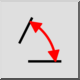

Kampas
Įrankių juosta / piktograma:

Meniu:
Informacija > Kampas
Trumpasis adresas:
I, A
Komandos:
infoangle | ia
Aprašymas
Šis įrankis matuoja kampą tarp dviejų nurodytų linijų.
Naudojimas
Nurodykite pirmą liniją.
Nurodykite antrą liniją.
Išmatuotas kampas (laipsniais) atspausdinamas ekrane ir komandų eilutėje.